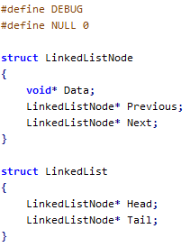

Chris Akridge
Software Developer
Cix is still in development and no version is currently available for download. However, please check the below links development material.
Cix (pronounced "six") is a compiler project for a simple C-like language. Its primary use will be to produce programs for the IronArc platform.
Cix is a procedural language built out of functions and structures, with certain built-in types such as integers and floating point values. Pointers to both memory and functions will be implemented.
Cix features a very simple preprocessor. Preprocessor symbols such as DEBUG can be defined, and individual tokens can be replaced, but Cix intentionally lacks a fully-featured macro processor that allows for large-scale rewriting of expressions and syntax.
Cix files are compiled in multiple passes. Thus, declaration order of functions, structures, and global variables are not important (though preprocessor declarations are). This obviates the need for header files and function declarations before definition.
